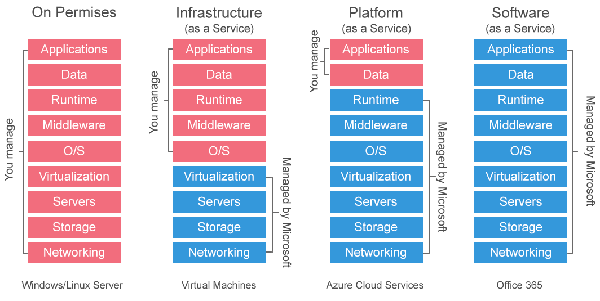
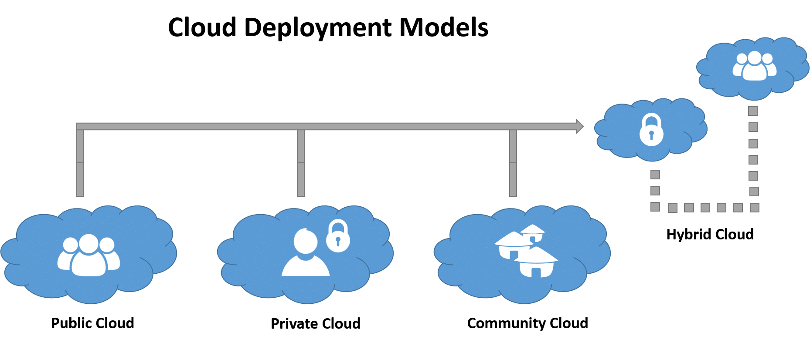
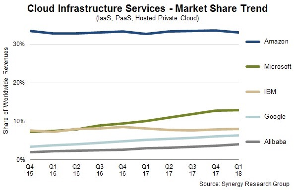

Cloud computing, often referred to as simply “the cloud,” is the delivery of on-demand computing resources everything from applications to data centers over the internet on a pay-for-use basis.
The term “Cloud Computing” is a recent buzzword in the IT world. Behind this fancy poetic phrase, there lies a true picture for the future of computing for both in technical perspective and social perspective. However, the term “Cloud Computing” is recent but the idea of centralizing computation and storage in distributed data centers maintained by third-party companies is not new but it came in the way back in the 1990s along with distributed computing approaches like grid computing. Cloud computing aimed at providing IT as a service to the cloud users on-demand basic with greater flexibility, availability, reliability, and scalability with the utility computing model. This new paradigm of computing has an immense potential in it to be used in the field of e-governance and in rural development perspective in the developing country like India.
On the basis of the provided services cloud computing is dividing into three parts. in sort called IaaS, PaaS, SaaS.
Platform as a service provides a cloud-based environment with everything required to support the complete lifecycle of building and delivering web-based (cloud) applications all without the cost and complexity of buying and managing the underlying hardware, software, provisioning and hosting. Benefits of PaaS are developing the application and get to market faster. Deploy new web applications to the cloud in minutes. Reduce complexity with middleware as a service.
Infrastructure as a service provides companies with computing resources including servers, networking, storage, and data-center space on a pay-per-use basis. Benefits of IaaS are no need to invest in your own hardware. Infrastructure scales on demand to support dynamic workloads. Flexible and innovative services are available on demand, etc…
Cloud-based applications or software as a service run on distant computers “in the cloud” that is owned and operated by others and that connect to users’ computers via the internet and (usually) a web browser. Benefits of SaaS are You can sign up and rapidly start using innovative business apps. Apps and data are accessible from any connected computer, no data is lost if your computer breaks because the data is in the cloud. The service is able to dynamically scale to usage needs.
On the basis of the deployment, cloud computing is dividing into four parts, public cloud, private cloud, community cloud and hybrid cloud.
Public clouds are owned and operated by companies that offer rapid access over a public network to affordable computing resources. With public cloud services, users don’t need to purchase hardware, software or supporting infrastructure, all of which is owned and managed by providers.
A private cloud is an infrastructure operated solely for a single organization, whether managed internally or by a third party and hosted either internally or externally. Private clouds can take advantage of the cloud’s efficiencies while providing more control of resources and allowing clients to steer clear of multitenancy.
A community cloud in computing is a collaborative effort in which infrastructure is shared between several organizations from a specific community with common concerns (security, compliance, jurisdiction, etc.), whether managed internally or by a third-party and hosted internally or externally. This is controlled and used by a group of organizations that have shared interest.
A hybrid cloud uses a private cloud foundation combined with the strategic integration and use of public cloud services. The reality is that a private cloud can’t exist in isolation from the rest of a company’s IT resources and the public cloud. Most companies with private clouds will evolve to manage workloads across data centers, private clouds, and public clouds, thereby creating hybrid clouds.
Nowadays, most companies have started providing cloud computing. The leading cloud computing companies: Alibaba, Amazon Web Services, Microsoft Azure, Google Cloud, IBM Cloud, and Oracle Cloud, each continues to invest heavily in offering new tools to customers. Cloud competition has only just begun.
As the cloud has gained popularity and acceptance in the computing world, more and more businesses are making the switch. Seven benefits of cloud from an enterprise architecture standpoint: